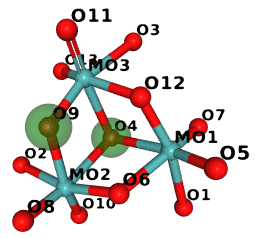
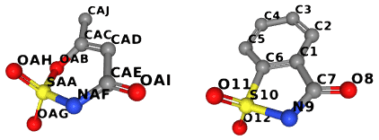

Structure analysis¶
Neighbor search¶
Fixed-radius near neighbor search is usually implemented using the cell lists method, also known as binning, bucketing or cell technique (or cubing – as it was called in an article from 1966). The method is simple. The unit cell (or the area where the molecules are located) is divided into small cells. The size of these cells depends on the search radius. Each cell stores the list of atoms in its area; these lists are used for fast lookup of atoms.
In Gemmi the cell technique is implemented in a class named SubCells
(“sub-” because these cells are subdivision of the unit cell).
The implementation works with both crystal and non-crystal system and:
handles crystallographic symmetry (including non-standard settings with origin shift that are present in a couple hundreds of PDB entries),
handles strict NCS (MTRIX record in the PDB format that is not “given”; in mmCIF it is the _struct_ncs_oper category),
handles alternative locations (atoms from different conformers are not neighbors),
can find neighbors any number of unit cells apart; surprisingly, molecules from different and not neighboring unit cells can be in contact, either because of the molecule shape (a single chain can be longer then four unit cells) or because of the non-optimal choice of symmetric images in the model (some PDB entries have even links between chains more than 10 unit cells away which cannot be expressed in the 1555 type of notation).
Note that while an atom can be bonded with its own symmetric image, it sometimes happens that an atom meant to be on a special position is slightly off, and its symmetric images represent the same atom (so we may have four nearby images each with occupancy 0.25). Such images will be returned by the SubCells class as neighbors and need to be filtered out by the users.
The constructor of SubCells divides the unit cell into bins.
For this it needs to know the the maximum radius that will be used in searches,
as well as the unit cell. Since the system may be non-periodic,
the constructor also takes the model as an argument – it is used to
calculate the bounding box for the model if there is no unit cell.
It is also stored and used if populate() is called.
The C++ signature (in gemmi/subcells.hpp) is:
SubCells::SubCells(Model& model, const UnitCell& cell, double max_radius)
Then the cell lists need to be populated with items either by calling:
void SubCells::populate(bool include_h=true)
or by adding individual atoms:
void SubCells::add_atom(const Atom& atom, int n_ch, int n_res, int n_atom)
where n_ch is the index of the chain in the model, n_res is the index
of the residue in the chain, and n_atom is the index of the atom
in the residue.
An example in Python:
>>> import gemmi
>>> st = gemmi.read_structure('../tests/1pfe.cif.gz')
>>> subcells = gemmi.SubCells(st[0], st.cell, 3)
>>> subcells.populate()
If we’d like to choose which atoms to add, for example to ignore hydrogens,
we could use add_atom() instead:
>>> subcells = gemmi.SubCells(st[0], st.cell, 3)
>>> for n_ch, chain in enumerate(st[0]):
... for n_res, res in enumerate(chain):
... for n_atom, atom in enumerate(res):
... if not atom.is_hydrogen():
... subcells.add_atom(atom, n_ch, n_res, n_atom)
...
The following functions search for atoms near the specified atom or point:
std::vector<Mark*> SubCells::find_neighbors(const Atom& atom, float min_dist, float max_dist)
std::vector<Mark*> SubCells::find_atoms(const Position& pos, char altloc, float radius)
>>> ref_atom = st[0].sole_residue('A', gemmi.SeqId('3')).sole_atom('P')
>>> marks = subcells.find_neighbors(ref_atom, min_dist=0.1, max_dist=3)
>>> len(marks)
6
>>> point = gemmi.Position(20, 20, 20)
>>> marks = subcells.find_atoms(point, '\0', radius=3)
>>> len(marks)
7
>>> marks[0]
<gemmi.SubCells.Mark O of atom 0/7/3>
Non-negative min_dist in the find_neighbors() call prevents
the atom whose neighbors we search from being included in the results
(the distance of the atom to itself is zero).
Additionally, in C++ you may use a function that takes a callback as the last argument (usage examples are in the source code):
template<typename T>
void SubCells::for_each(const Position& pos, char altloc, float radius, const T& func)
Cell-lists store Marks. When searching for neighbors you get references
(in C++ – pointers) to these marks.
Mark has a number of properties: x, y, z,
altloc, element, image_idx (index of the symmetry operation
that was used to generate this mark, 0 for identity),
chain_idx, residue_idx and atom_idx.
The references to the original model and to atoms are not stored.
Mark has a method to_cra() that needs to be called with Model
as an argument to get a triple of Chain, Residue and Atom:
CRA SubCells::Mark::to_cra(Model& model) const
>>> cra = marks[0].to_cra(st[0])
>>> cra.chain
<gemmi.Chain A with 79 res>
>>> cra.residue
<gemmi.Residue 8(DC) with 19 atoms>
>>> cra.atom
<gemmi.Atom O5' at (-0.0, 13.9, -17.6)>
Mark also has a little helper method pos() that returns
Position(x, y, z):
Position SubCells::Mark::pos() const
>>> marks[0].pos()
<gemmi.Position(19.659, 20.2489, 17.645)>
Note that it can be the position of a symmetric image of the atom. In this example the “original” atom is in a different location:
>>> cra.atom.pos
<gemmi.Position(-0.028, 13.85, -17.645)>
Contact search¶
Contacts in a molecule or in a crystal can be found using the neighbor search described in the previous section. But to make it easier we have a dedicated class ContactSearch. It uses the neighbor search to find pairs of atoms close to each other and applies the filters described below.
When constructing ContactSearch we set the overall maximum search distance.
This distance is stored as the search_radius property:
>>> cs = gemmi.ContactSearch(4.0)
>>> cs.search_radius
4.0
Additionally, we can set up per-element radii. This excludes pairs of atoms in a distance larger than the sum of their per-element radii. The radii are initialized as a linear function of the covalent radius: r = a × rcov + b/2.
>>> cs.setup_atomic_radii(1.0, 1.5)
Then each radius can be accessed and modified individually:
>>> cs.get_radius(gemmi.Element('Zr'))
2.5
>>> cs.set_radius(gemmi.Element('Hg'), 1.5)
Next, we have the ignore property that can take
one of the following values:
ContactSearch.Ignore.Nothing – no filtering here,
ContactSearch.Ignore.SameResidue – ignore atom pairs from the same residue,
ContactSearch.Ignore.AdjacentResidues – ignore atom pairs from the same or adjacent residues,
ContactSearch.Ignore.SameChain – show only inter-chain contacts (including contacts between different symmetry images of one chain),
ContactSearch.Ignore.SameAsu – show only contacts between different asymmetric units.
>>> cs.ignore = gemmi.ContactSearch.Ignore.AdjacentResidues
You can also ignore atoms that have occupancy below the specified threshold:
>>> cs.min_occupancy = 0.01
Sometimes, it is handy to get each atom pair twice (as A-B and B-A).
In such case make the twice property true. By default, it is false:
>>> cs.twice
False
Next property deals with atoms at special positions (such as rotation axis). Such atoms can be slightly off the special position (because macromolecular refinement programs usually don’t constrain coordinates), so we must ensure that an atom that should sit on the special position and its apparent symmetry image are not regarded a contact. We assume that if the distance between an atom and its image is small, it is not a real thing. For larger distances we assume it is a real contact with atom’s symmetry mate. To tell apart the two cases we use a cut-off distance that can be modified:
>>> cs.special_pos_cutoff_sq = 0.5 ** 2 # setting cut-off to 0.5A
The contact search uses an instance of SubCells.
>>> st = gemmi.read_structure('../tests/5cvz_final.pdb')
>>> st.setup_entities()
>>> subcells = gemmi.SubCells(st[0], st.cell, 5)
>>> subcells.populate()
If you’d like to ignore hydrogens from the model,
call subcells.populate(include_h=False).
If you’d like to ignore waters, either remove waters from the Model
(function remove_waters()) or ignore results that contain waters.
The actual contact search is done by:
>>> results = cs.find_contacts(subcells)
>>> len(results)
49
>>> results[0]
<gemmi.ContactSearch.Result object at 0x...>
The ContactSearch.Result class has four properties:
>>> results[0].partner1
<gemmi.CRA A/SER 21/OG>
>>> results[0].partner2
<gemmi.CRA A/TYR 24/N>
>>> results[0].image_idx
52
>>> results[0].dist
2.8613362312316895
The first two properties are CRAs for the involved atoms.
The image_idx is an index of the symmetry image (both crystallographic
symmetry and strict NCS count).
Value 0 would mean that both atoms (partner1 and partner2)
are in the same unit.
In this example the value can be high because it is a structure of
icosahedral viral capsid with 240 identical units in the unit cell.
The last property is the distance between atoms.
See also command-line program gemmi-contact.
Gemmi provides also an undocumented class LinkHunt which matches contacts to links definitions from monomer library and to connections (LINK, SSBOND) from the structure. If you would find it useful, contact the author.
Selections¶
For now, Gemmi supports only the selection syntax from MMDB, called CID (Coordinate ID). The syntax is described at the bottom of the pdbcur documentation.
The selections in Gemmi are not widely used yet and the API may evolve. The example below demonstrates currently provided functions:
>>> st = gemmi.read_structure('../tests/1pfe.cif.gz')
>>> # select all Cl atoms
>>> sel = gemmi.parse_cid('[CL]')
>>> # get the first result as pointer to model and CRA (chain, residue, atom)
>>> sel.first(st)
(<gemmi.Model 1 with 2 chain(s)>, <gemmi.CRA A/CL 20/CL>)
>>> sel = gemmi.parse_cid('A/1-4/N9')
>>> sel.to_cid()
'//A/1.-4./N9'
>>> # iterate over hierarchy filtered by the selection
>>> for model in sel.models(st):
... for chain in sel.chains(model):
... print('-', chain.name)
... for residue in sel.residues(chain):
... print(' -', str(residue))
... for atom in sel.atoms(residue):
... print(' -', atom.name)
...
- A
- 1(DG)
- N9
- 2(DC)
- 3(DG)
- N9
- 4(DT)
Graph analysis¶
The graph algorithms in Gemmi are limited to finding the shortest path between atoms (bonds = graph edges). This part of the library is not documented yet.
The rest of this section shows how to use Gemmi together with external graph analysis libraries to analyse the similarity of chemical molecules. To do this, first we set up a graph corresponding to the molecule.
Here we show how it can be done in the Boost Graph Library.
#include <boost/graph/graph_traits.hpp>
#include <boost/graph/adjacency_list.hpp>
#include <gemmi/cif.hpp> // for cif::read_file
#include <gemmi/chemcomp.hpp> // for ChemComp, make_chemcomp_from_block
struct AtomVertex {
gemmi::Element el = gemmi::El::X;
std::string name;
};
struct BondEdge {
gemmi::BondType type;
};
using Graph = boost::adjacency_list<boost::vecS, boost::vecS,
boost::undirectedS,
AtomVertex, BondEdge>;
Graph make_graph(const gemmi::ChemComp& cc) {
Graph g(cc.atoms.size());
for (size_t i = 0; i != cc.atoms.size(); ++i) {
g[i].el = cc.atoms[i].el;
g[i].name = cc.atoms[i].id;
}
for (const gemmi::Restraints::Bond& bond : cc.rt.bonds) {
int n1 = cc.get_atom_index(bond.id1.atom);
int n2 = cc.get_atom_index(bond.id2.atom);
boost::add_edge(n1, n2, BondEdge{bond.type}, g);
}
return g;
}
And here we use NetworkX in Python:
>>> import networkx
>>> G = networkx.Graph()
>>> block = gemmi.cif.read('../tests/SO3.cif')[-1]
>>> so3 = gemmi.make_chemcomp_from_block(block)
>>> for atom in so3.atoms:
... G.add_node(atom.id, Z=atom.el.atomic_number)
...
>>> for bond in so3.rt.bonds:
... G.add_edge(bond.id1.atom, bond.id2.atom) # ignoring bond type
...
To show a quick example, let us count automorphisms of SO3:
>>> import networkx.algorithms.isomorphism as iso
>>> GM = iso.GraphMatcher(G, G, node_match=iso.categorical_node_match('Z', 0))
>>> # expecting 3! automorphisms (permutations of the three oxygens)
>>> sum(1 for _ in GM.isomorphisms_iter())
6
With a bit more of code we could perform a real cheminformatics task.
Graph isomorphism¶
In this example we use Python NetworkX to compare molecules from the Refmac monomer library with Chemical Component Dictionary (CCD) from PDB. The same could be done with other graph analysis libraries, such as Boost Graph Library, igraph, etc.
The program below takes compares specified monomer cif files with corresponding CCD entries. Hydrogens and bond types are ignored. It takes less than half a minute to go through the 25,000 monomer files distributed with CCP4 (as of Oct 2018), so we do not try to optimize the program.
# Compares graphs of molecules from cif files (Refmac dictionary or similar)
# with CCD entries.
import sys
import networkx
from networkx.algorithms import isomorphism
import gemmi
CCD_PATH = 'components.cif.gz'
def graph_from_chemcomp(cc):
G = networkx.Graph()
for atom in cc.atoms:
G.add_node(atom.id, Z=atom.el.atomic_number)
for bond in cc.rt.bonds:
G.add_edge(bond.id1.atom, bond.id2.atom)
return G
def compare(cc1, cc2):
s1 = {a.id for a in cc1.atoms}
s2 = {a.id for a in cc2.atoms}
b1 = {b.lexicographic_str() for b in cc1.rt.bonds}
b2 = {b.lexicographic_str() for b in cc2.rt.bonds}
if s1 == s2 and b1 == b2:
#print(cc1.name, "the same")
return
G1 = graph_from_chemcomp(cc1)
G2 = graph_from_chemcomp(cc2)
node_match = isomorphism.categorical_node_match('Z', 0)
GM = isomorphism.GraphMatcher(G1, G2, node_match=node_match)
if GM.is_isomorphic():
print(cc1.name, 'is isomorphic')
# we could use GM.match(), but here we try to find the shortest diff
short_diff = None
for n, mapping in enumerate(GM.isomorphisms_iter()):
diff = {k: v for k, v in mapping.items() if k != v}
if short_diff is None or len(diff) < len(short_diff):
short_diff = diff
if n == 10000: # don't spend too much here
print(' (it may not be the simplest isomorphism)')
break
for id1, id2 in short_diff.items():
print('\t', id1, '->', id2)
else:
print(cc1.name, 'differs')
if s2 - s1:
print('\tmissing:', ' '.join(s2 - s1))
if s1 - s2:
print('\textra: ', ' '.join(s1 - s2))
def main():
ccd = gemmi.cif.read(CCD_PATH)
absent = 0
for f in sys.argv[1:]:
block = gemmi.cif.read(f)[-1]
cc1 = gemmi.make_chemcomp_from_block(block)
try:
block2 = ccd[cc1.name]
except KeyError:
absent += 1
#print(cc1.name, 'not in CCD')
continue
cc2 = gemmi.make_chemcomp_from_block(block2)
cc1.remove_hydrogens()
cc2.remove_hydrogens()
compare(cc1, cc2)
if absent != 0:
print(absent, 'of', len(sys.argv) - 1, 'monomers not found in CCD')
main()
If we run it on monomers that start with M we get:
$ examples/ccd_gi.py $CLIBD_MON/m/*.cif
M10 is isomorphic
O9 -> O4
O4 -> O9
MK8 is isomorphic
O2 -> OXT
MMR differs
missing: O12 O4
2 of 821 monomers not found in CCD
So in M10 the two atoms marked green are swapped:
{kind=link}
(The image was generated in NGL and compressed with Compress-Or-Die.)
Substructure matching¶
Now a little script to illustrate subgraph isomorphism. The script takes a (three-letter-)code of a molecule that is to be used as a pattern and finds CCD entries that contain such a a substructure. As in the previous example, hydrogens and bond types are ignored.
# List CCD entries that contain the specified entry as a substructure.
# Ignoring hydrogens and bond types.
import sys
import networkx
from networkx.algorithms import isomorphism
import gemmi
CCD_PATH = 'components.cif.gz'
def graph_from_block(block):
cc = gemmi.make_chemcomp_from_block(block)
cc.remove_hydrogens()
G = networkx.Graph()
for atom in cc.atoms:
G.add_node(atom.id, Z=atom.el.atomic_number)
for bond in cc.rt.bonds:
G.add_edge(bond.id1.atom, bond.id2.atom)
return G
def main():
assert len(sys.argv) == 2, "Usage: ccd_subgraph.py three-letter-code"
ccd = gemmi.cif.read(CCD_PATH)
entry = sys.argv[1]
pattern = graph_from_block(ccd[entry])
pattern_nodes = networkx.number_of_nodes(pattern)
pattern_edges = networkx.number_of_edges(pattern)
node_match = isomorphism.categorical_node_match('Z', 0)
for block in ccd:
G = graph_from_block(block)
GM = isomorphism.GraphMatcher(G, pattern, node_match=node_match)
if GM.subgraph_is_isomorphic():
print(block.name, '\t +%d nodes, +%d edges' % (
networkx.number_of_nodes(G) - pattern_nodes,
networkx.number_of_edges(G) - pattern_edges))
main()
Let us check what entries have HEM as a substructure:
$ examples/ccd_subgraph.py HEM
1FH +6 nodes, +7 edges
2FH +6 nodes, +7 edges
4HE +7 nodes, +8 edges
522 +2 nodes, +2 edges
6CO +6 nodes, +7 edges
6CQ +7 nodes, +8 edges
89R +3 nodes, +3 edges
CLN +1 nodes, +2 edges
DDH +2 nodes, +2 edges
FEC +6 nodes, +6 edges
HAS +22 nodes, +22 edges
HCO +1 nodes, +1 edges
HDM +2 nodes, +2 edges
HEA +17 nodes, +17 edges
HEB +0 nodes, +0 edges
HEC +0 nodes, +0 edges
HEM +0 nodes, +0 edges
HEO +16 nodes, +16 edges
HEV +2 nodes, +2 edges
HP5 +2 nodes, +2 edges
ISW +0 nodes, +0 edges
MH0 +0 nodes, +0 edges
MHM +0 nodes, +0 edges
N7H +3 nodes, +3 edges
NTE +3 nodes, +3 edges
OBV +14 nodes, +14 edges
SRM +20 nodes, +20 edges
UFE +18 nodes, +18 edges
Maximum common subgraph¶
In this example we use McGregor’s algorithm implemented in the Boost Graph
Library to find maximum common induced subgraph. We call the MCS searching
function with option only_connected_subgraphs=true, which has obvious
meaning and can be changed if needed.
To illustrate this example, we compare ligands AUD and LSA:
{kind=link}
The whole code is in examples/with_bgl.cpp. The same file has also
examples of using the BGL implementation of VF2 to check graph
and subgraph isomorphisms.
// We ignore hydrogens here.
// Example output:
// $ time with_bgl -c monomers/a/AUD.cif monomers/l/LSA.cif
// Searching largest subgraphs of AUD and LSA (10 and 12 vertices)...
// Maximum connected common subgraph has 7 vertices:
// SAA -> S10
// OAG -> O12
// OAH -> O11
// NAF -> N9
// CAE -> C7
// OAI -> O8
// CAD -> C1
// Maximum connected common subgraph has 7 vertices:
// SAA -> S10
// OAG -> O11
// OAH -> O12
// NAF -> N9
// CAE -> C7
// OAI -> O8
// CAD -> C1
//
// real 0m0.012s
// user 0m0.008s
// sys 0m0.004s
struct PrintCommonSubgraphCallback {
Graph g1, g2;
template <typename CorrespondenceMap1To2, typename CorrespondenceMap2To1>
bool operator()(CorrespondenceMap1To2 map1, CorrespondenceMap2To1,
typename GraphTraits::vertices_size_type subgraph_size) {
std::cout << "Maximum connected common subgraph has " << subgraph_size
<< " vertices:\n";
for (auto vp = boost::vertices(g1); vp.first != vp.second; ++vp.first) {
Vertex v1 = *vp.first;
Vertex v2 = boost::get(map1, v1);
if (v2 != GraphTraits::null_vertex())
std::cout << " " << g1[v1].name << " -> " << g2[v2].name << std::endl;
}
return true;
}
};
void find_common_subgraph(const char* cif1, const char* cif2) {
gemmi::ChemComp cc1 = make_chemcomp(cif1).remove_hydrogens();
Graph graph1 = make_graph(cc1);
gemmi::ChemComp cc2 = make_chemcomp(cif2).remove_hydrogens();
Graph graph2 = make_graph(cc2);
std::cout << "Searching largest subgraphs of " << cc1.name << " and "
<< cc2.name << " (" << cc1.atoms.size() << " and " << cc2.atoms.size()
<< " vertices)..." << std::endl;
mcgregor_common_subgraphs_maximum_unique(
graph1, graph2,
get(boost::vertex_index, graph1), get(boost::vertex_index, graph2),
[&](Edge a, Edge b) { return graph1[a].type == graph2[b].type; },
[&](Vertex a, Vertex b) { return graph1[a].el == graph2[b].el; },
/*only_connected_subgraphs=*/ true,
PrintCommonSubgraphCallback{graph1, graph2});
}
Torsion Angles¶
This section presents functions dedicated to calculation of the dihedral angles
φ (phi), ψ (psi) and ω (omega) of the protein backbone.
These functions are built upon the more general calculate_dihedral function,
introduced in the section about coordinates,
which takes four points in the space as arguments.
calculate_omega() calculates the ω angle, which is usually around 180°:
>>> from math import degrees
>>> chain = gemmi.read_structure('../tests/5cvz_final.pdb')[0]['A']
>>> degrees(gemmi.calculate_omega(chain[0], chain[1]))
159.90922150065668
>>> for res in chain[:5]:
... next_res = chain.next_residue(res)
... if next_res:
... omega = gemmi.calculate_omega(res, next_res)
... print(res.name, degrees(omega))
...
ALA 159.90922150065668
ALA -165.26874513591105
ALA -165.85686681169656
THR -172.99968385093513
SER 176.74223937657646
The φ and ψ angles are often used together, so they are calculated
in one function calculate_phi_psi():
>>> for res in chain[:5]:
... prev_res = chain.previous_residue(res)
... next_res = chain.next_residue(res)
... phi, psi = gemmi.calculate_phi_psi(prev_res, res, next_res)
... print('%s %8.2f %8.2f' % (res.name, degrees(phi), degrees(psi)))
...
ALA nan 106.94
ALA -116.64 84.57
ALA -45.57 127.40
THR -62.01 147.45
SER -92.85 161.53
In C++ these functions can be found in gemmi/calculate.hpp.
The torsion angles φ and ψ can be visualized on the Ramachandran plot. Let us plot angles from all PDB entries with the resolution higher than 1.5A. Usually, glycine, proline and the residue preceding proline (pre-proline) are plotted separately. Here, we will exclude pre-proline and make separate plot for each amino acid. So first, we calculate angles and save φ,ψ pairs in a set of files – one file per residue.
import sys
from math import degrees
import gemmi
ramas = {aa: [] for aa in [
'LEU', 'ALA', 'GLY', 'VAL', 'GLU', 'SER', 'LYS', 'ASP', 'THR', 'ILE',
'ARG', 'PRO', 'ASN', 'PHE', 'GLN', 'TYR', 'HIS', 'MET', 'CYS', 'TRP']}
for path in gemmi.CoorFileWalk(sys.argv[1]):
st = gemmi.read_structure(path)
if 0.1 < st.resolution < 1.5:
model = st[0]
for chain in model:
for res in chain.get_polymer():
# previous_residue() and next_residue() return previous/next
# residue only if the residues are bonded. Otherwise -- None.
prev_res = chain.previous_residue(res)
next_res = chain.next_residue(res)
if prev_res and next_res and next_res.name != 'PRO':
v = gemmi.calculate_phi_psi(prev_res, res, next_res)
try:
ramas[res.name].append(v)
except KeyError:
pass
# Write data to files
for aa, data in ramas.items():
with open('ramas/' + aa + '.tsv', 'w') as f:
for phi, psi in data:
f.write('%.4f\t%.4f\n' % (degrees(phi), degrees(psi)))
The script above works with coordinate files in any of the formats supported by gemmi (PDB, mmCIF, mmJSON). As of 2019, processing a local copy of the PDB archive in the PDB format takes about 20 minutes.
In the second step we plot the data points with matplotlib.
We use a script that can be found in examples/rama_gather.py.
Six of the resulting plots are shown here (click to enlarge):
{kind=link}
Local copy of the PDB archive¶
Some examples in this documentation work on a local copy of the Protein Data Bank archive. This subsection is actually a footnote describing our setup.
Like in BioJava, we assume that the $PDB_DIR environment variable
points to a directory that contains structures/divided/mmCIF – the same
arrangement as on the
PDB’s FTP server.
$ cd $PDB_DIR
$ du -sh structures/*/* # as of Jun 2017
34G structures/divided/mmCIF
25G structures/divided/pdb
101G structures/divided/structure_factors
2.6G structures/obsolete/mmCIF
A traditional way to keep an up-to-date local archive is to rsync it once a week:
#!/bin/sh -x
set -u # PDB_DIR must be defined
rsync_subdir() {
mkdir -p "$PDB_DIR/$1"
# Using PDBe (UK) here, can be replaced with RCSB (USA) or PDBj (Japan),
# see https://www.wwpdb.org/download/downloads
rsync -rlpt -v -z --delete \
rsync.ebi.ac.uk::pub/databases/pdb/data/$1/ "$PDB_DIR/$1/"
}
rsync_subdir structures/divided/mmCIF
#rsync_subdir structures/obsolete/mmCIF
#rsync_subdir structures/divided/pdb
#rsync_subdir structures/divided/structure_factors